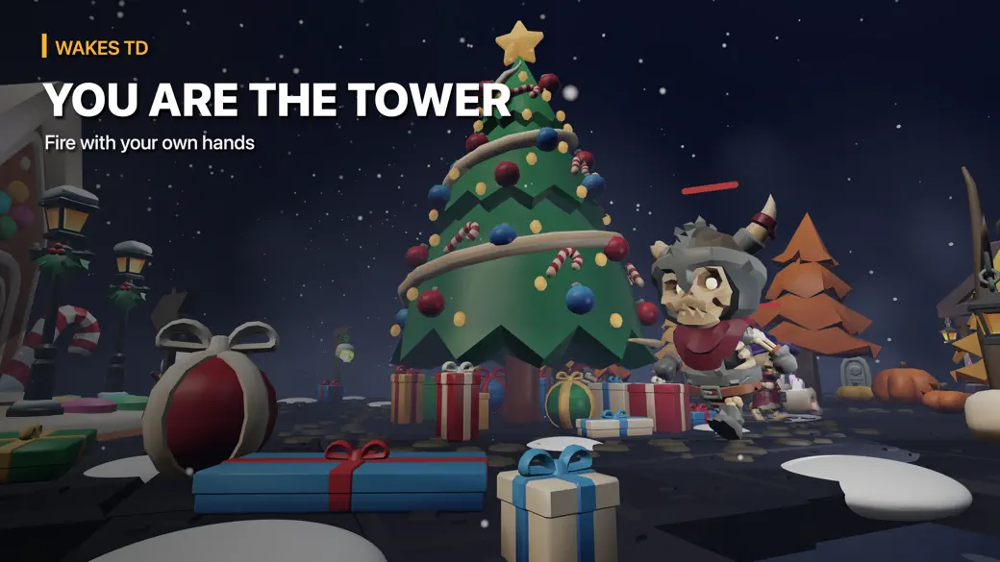
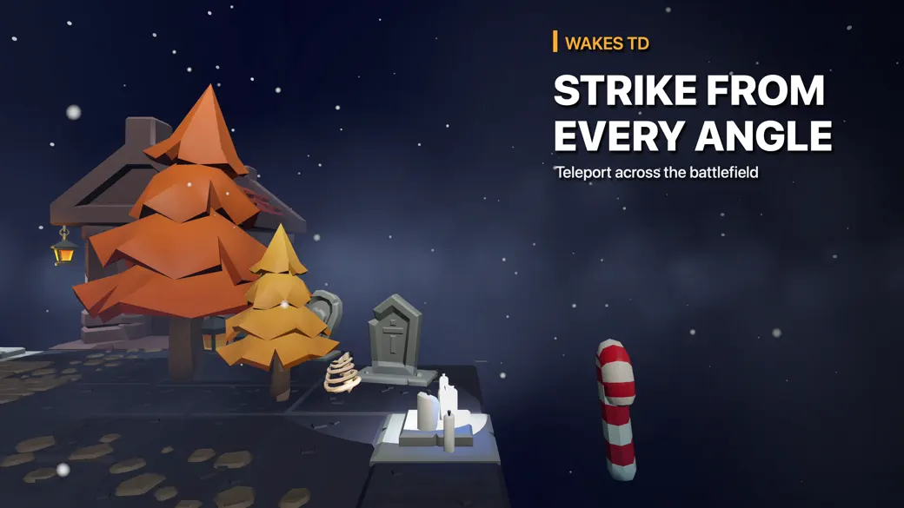
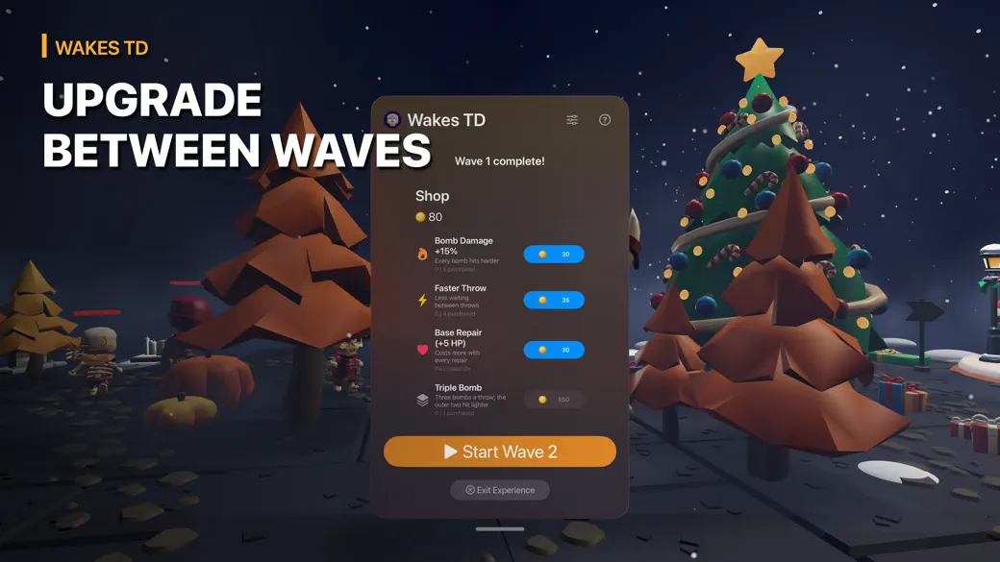
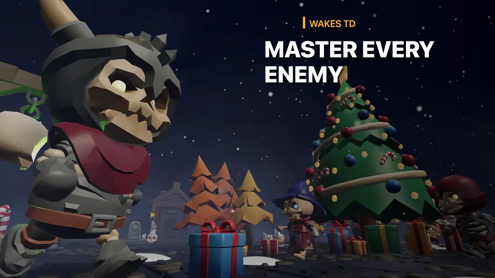
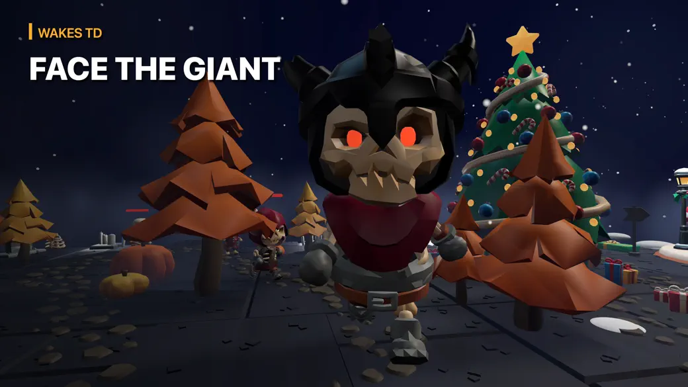
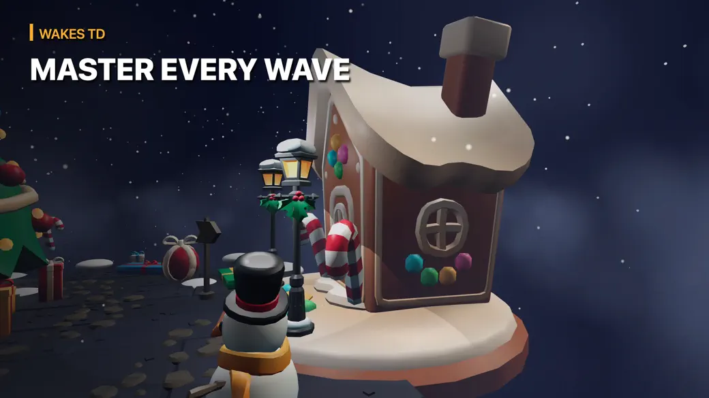

09 / 09
visionOS • SwiftUI • RealityKit
Wakes
Your hands are the weapon. The village is under attack.
How it works
↗ App StoreIn Wakes, enemies follow a path toward the village. Throw bombs with your hands to stop each wave—and get ready for the next.
Defeated enemies earn you money for upgrades between waves. The game uses hand tracking for input and RealityKit for the immersive world.
Step into the battlefield





